Chapter 1: Machine Learning Foundations¶
This chapter starts from zero: what machine learning is, how it differs from AI, deep learning and generative AI, and the main ways machines learn. It builds the core vocabulary and the end-to-end project workflow, explains the maths you need (vectors, gradients, probability and statistics) in gentle, worked steps, then tells the story from the 1958 perceptron to 2025's reasoning models, shows where ML touches daily life, when not to use it, and maps the 2026 landscape.
1.1 What Machine Learning Is: Learning From Data Instead of Writing Rules¶
Machine learning (ML) is a way of building software where, instead of a programmer writing every rule by hand, the computer finds the rules itself by studying many examples. You show it past data with the right answers, it adjusts itself until its guesses match, and then it can make guesses about new cases it has never seen.
Writing rules vs learning rules
| Traditional programming | Machine learning | |
|---|---|---|
| Input | Rules + data | Data + correct answers |
| Output | Answers | A model (learned rules) |
| Who writes logic | A programmer | A training algorithm |
| When world changes | Rewrite code by hand | Retrain on new data |
| Best when | Rules are clear and fixed | Patterns are fuzzy or huge |
| Example | Tax calculator | Spam filter |
In ML the rules are an output of training, not an input written by a person.
Think of it like…
Teaching a child to recognise dogs is not done by reciting a rulebook about ears and tails; you point at hundreds of dogs and non-dogs until the child just 'gets it'. Machine learning teaches computers the same way.
Real-world example
Amara runs support at the fictional Kettle & Co. online shop. Her team once kept a 300-line list of keywords to route emails to Billing, Returns or Delivery, and it broke whenever customers used new words. They instead fed 40,000 already-routed emails to an ML model. It learned the patterns itself, routed 92% of new emails correctly, and simply retrains each month as language changes.
How it works¶
- Collect examples of the task, ideally with the correct answer attached (for instance, emails plus the department that handled them).
- Choose a learning algorithm: a general recipe that can fit many different patterns.
- Train: the algorithm repeatedly guesses, measures how wrong it is, and tweaks its internal numbers to be less wrong.
- Test the trained model on examples it never saw, to check it learned the pattern rather than memorising answers.
- Use the model on new data, and keep checking it, because the world (and the data) keeps changing.
Who uses it
Data scientists, ML engineers and software developers build it; almost every tech, finance, retail, health and media company now runs ML somewhere in its products.
Key takeaway
Interview one-liner: traditional programming turns rules + data into answers; machine learning turns data + answers into rules (a model).
Going deeper
- Tom Mitchell's 1997 textbook definition is the one examiners like: a program learns from experience E on tasks T, measured by performance P, if its performance on T, as measured by P, improves with E.
- Every ML method combines three ingredients: a model family (the shapes of rules it can express), a loss function (how wrongness is scored) and an optimiser (how the model's numbers are adjusted to reduce that loss).
- The real goal is generalisation: doing well on future, unseen data. Scoring 100% on the training data is easy by memorising and says almost nothing about real-world performance.
- Wolpert's 'no free lunch' results show that, averaged over every possible problem, no learning algorithm beats any other; algorithms win only because their built-in assumptions suit the data at hand.
- Andrej Karpathy's 2017 'Software 2.0' essay described neural networks as code written by optimisation rather than by people, which is why data quality became as important as code quality.
- Arthur Samuel's checkers program at IBM in the 1950s improved by playing thousands of games against itself and is often cited as the first self-learning program; he popularised the term 'machine learning' in 1959.
Common mistakes & misconceptions
- Believing ML 'understands' like a human: a model only captures statistical patterns in its training data and can fail badly on situations unlike that data.
- Thinking more complex always means better: a simple, well-tested model on good data usually beats a fancy model on messy data.
- Assuming a model is finished once trained: data drifts over time, so models need monitoring and periodic retraining.
Try it: Your first model in eight lines of Python (pip install scikit-learn)¶
from sklearn.datasets import load_iris
from sklearn.model_selection import train_test_split
from sklearn.tree import DecisionTreeClassifier
X, y = load_iris(return_X_y=True) # 150 flowers, 4 measurements each
X_tr, X_te, y_tr, y_te = train_test_split(X, y, random_state=0)
model = DecisionTreeClassifier().fit(X_tr, y_tr) # learn rules from data
print('accuracy on unseen flowers:', model.score(X_te, y_te))
Key algorithms, models, techniques, tools & concepts¶
| Name | What it does | Example |
|---|---|---|
| Arthur Samuel's definition (1959) Arthur Samuel, IBM · Concept · Current · Beginner |
The widely quoted idea that ML gives computers the ability to learn without being explicitly programmed for each case. | Samuel's checkers program got better by playing itself; nobody coded a winning strategy into it. |
| Mitchell's T-P-E definition Tom Mitchell, 'Machine Learning' (1997) · Concept · Current · Beginner |
A program learns if its performance P on task T improves with experience E — a precise, testable definition. | Task: flag spam. Performance: % correctly flagged. Experience: 50,000 labelled emails. More emails, higher score, so it learns. |
| Rule-based programming Classical software engineering · Concept · Current · Beginner |
Software where humans write explicit if-then logic; predictable and auditable, but brittle for fuzzy patterns like images or language. | A VAT calculator applies fixed tax rates exactly — no learning needed or wanted. |
| Expert systems e.g. MYCIN, Stanford (1970s) · Concept · Legacy · Beginner |
1970s-80s AI that encoded specialists' knowledge as hundreds of hand-written rules; costly to maintain as knowledge changed. | MYCIN suggested antibiotics using roughly 600 rules written with doctors; it was never used routinely on patients. |
| Learning algorithm General ML term · Concept · Current · Beginner |
The general recipe (e.g. decision tree, neural network) that searches for a model that fits the training data. | The same decision-tree algorithm can learn to sort flowers, approve loans or predict churn — only the data changes. |
| Induction (learning from examples) Philosophy of science / ML theory · Concept · Current · Beginner |
Reasoning from specific observed cases to a general rule — the core move every ML algorithm automates. | After 40,000 routed emails, the model infers that 'refund' plus an order number usually means Returns. |
| Pattern recognition Statistics / engineering tradition · Concept · Current · Beginner |
The older name for finding regularities in data — handwriting, speech, faces — that grew into modern ML. | Postal services used pattern recognition to read handwritten ZIP codes in the 1990s. |
| Statistical learning Statistics (Hastie, Tibshirani, Friedman) · Concept · Current · Intermediate |
The statistics view of ML, focused on modelling data with uncertainty and understanding why methods generalise. | The book 'An Introduction to Statistical Learning' teaches regression and trees from this angle. |
| Prediction vs explanation Statistics / ML · Concept · Current · Intermediate |
ML usually optimises for accurate predictions; classical statistics often aims to explain causes. The goals need different methods. | A model predicts which customers will leave; it does not prove why they leave. |
| Inductive bias ML theory · Concept · Current · Intermediate |
The built-in assumptions an algorithm makes (e.g. 'nearby points share labels') that let it generalise beyond seen examples. | Convolutional networks assume nearby pixels matter together, which suits photos but not spreadsheets. |
| No free lunch theorem David Wolpert (1996); Wolpert & Macready (1997) · Concept · Current · Advanced |
Averaged over all possible problems, every learning algorithm performs equally; you must match the method to your data. | Gradient-boosted trees win many spreadsheet competitions but lose to CNNs on raw images. |
| Software 2.0 Andrej Karpathy (2017 essay) · Concept · Current · Intermediate |
The idea that trained neural-network weights are a new kind of software, 'written' by data and optimisation instead of programmers. | A photo-tagging feature's behaviour is changed by adding labelled photos, not by editing if-statements. |
| fit / predict pattern scikit-learn API convention · Concept · Current · Beginner |
The universal two-step interface: fit() learns from training data, predict() applies the learned model to new data. | model.fit(X_train, y_train) then model.predict(X_new) — the same two calls for hundreds of algorithms. |
1.2 AI vs Machine Learning vs Deep Learning vs Generative AI¶
These four terms nest inside each other like dolls. Artificial intelligence (AI) is the whole goal of making machines do things that seem intelligent. Machine learning is the main way AI is built today: learning from data. Deep learning is ML using large neural networks with many layers. Generative AI is the part of deep learning that creates new text, images, audio or code.

Think of it like…
Think of 'vehicles' (AI), 'cars' (ML), 'electric cars' (deep learning) and 'self-driving electric cars' (generative AI): each is a more specific, more recent kind of the one before.
Real-world example
Luca's bank uses all four. A hand-written rule blocks transfers over €10,000 without ID (AI, but not ML). A gradient-boosted model scores each card payment for fraud (ML). A deep neural network reads cheque images (deep learning). A chatbot built on a large language model drafts replies to customers (generative AI).
How it works¶
- Ask: does the system behave intelligently at all? Then it is AI, even if it is just hand-written rules or search.
- Ask: did it learn its behaviour from data? Then it is machine learning.
- Ask: is the learner a neural network with many layers? Then it is deep learning.
- Ask: does it produce new content (text, images, sound, code) rather than a label or number? Then it is generative AI.
- Ask: is it a huge model trained on broad data and adapted to many tasks? Then it is also a foundation model.
Who uses it
Everyone in tech uses these words; product managers, journalists, regulators and job adverts often mix them up, so precise use marks you out.
Key takeaway
Not all AI is ML and not all ML is deep learning: a chess engine searching moves, a route planner and a rules engine are AI without learning.
Going deeper
- John McCarthy coined 'artificial intelligence' in the 1955 proposal for the 1956 Dartmouth workshop; early AI was mostly symbolic, manipulating hand-written logic rather than learning from data.
- Deep learning took over vision, speech and language after 2012 because three things arrived together: large labelled datasets such as ImageNet, cheap parallel GPUs, and better training tricks like ReLU and dropout.
- Discriminative models learn the boundary between answers, p(label | input); generative models learn how the data itself is distributed, so they can sample new examples such as sentences or images.
- Stanford researchers named 'foundation models' in 2021: very large models pretrained on broad data with self-supervision, then adapted to many downstream tasks by prompting or fine-tuning.
- On tabular business data, classic ML such as gradient-boosted trees still often beats deep learning, so 'AI' in a company frequently means modest models rather than chatbots.
- Artificial general intelligence (AGI) has no agreed definition or test; treat claims about it as forecasts or company goals, not as established facts.
Common mistakes & misconceptions
- Using 'AI' and 'ChatGPT' as synonyms: large language models are one small, recent corner of a much bigger field.
- Assuming deep learning is always best: for small or tabular datasets, simpler ML is usually cheaper, faster and just as accurate.
- Calling every automated rule 'machine learning': if nothing was learned from data, it is conventional software.
Key algorithms, models, techniques, tools & concepts¶
| Name | What it does | Example |
|---|---|---|
| Artificial intelligence (AI) Term coined by John McCarthy (1955) · Concept · Current · Beginner |
The broad field of making machines perform tasks that normally need human intelligence: perceiving, reasoning, planning, language. | A sat-nav finding the fastest route uses AI search, even with no machine learning inside. |
| Symbolic AI (GOFAI) 1950s-1980s AI research · Concept · Legacy · Beginner |
'Good old-fashioned AI' that reasons with hand-written symbols, logic and rules instead of learning from data. | Early chess programs and expert systems were symbolic; modern engines combine search with learned evaluation. |
| Machine learning (ML) Subfield of AI · Concept · Current · Beginner |
The part of AI where systems improve at a task by learning patterns from data instead of following only hand-written rules. | A churn model learns from 2 years of customer history which subscribers are likely to cancel. |
| Deep learning (DL) Subfield of ML · Concept · Current · Beginner |
ML using neural networks with many stacked layers that learn their own features from raw data like pixels or text. | A deep network reads X-ray pixels directly, with no hand-designed 'edge detector' features. |
| Artificial neural network Inspired by McCulloch & Pitts (1943) · Architecture · Current · Beginner |
Layers of simple connected units; each multiplies inputs by learned weights, adds them and passes the result on. | A small network with two hidden layers can learn to read handwritten digits at about 98% accuracy. |
| Generative AI Subfield of DL · Concept · Current · Beginner |
Models that create new content — text, images, audio, video or code — by learning the patterns of their training data. | A marketing team generates ten draft product descriptions, then a human edits the best one. |
| Foundation model Term from Stanford CRFM (2021) · Concept · Current · Intermediate |
A large model pretrained on broad data that can be adapted to many tasks, often by prompting rather than retraining. | One language model powers a company's search, summaries and coding assistant at the same time. |
| Large language model (LLM) e.g. GPT, Claude, Gemini, Llama families · Model · Current · Beginner |
A very large neural network trained to predict the next piece of text, which lets it answer, summarise and write code. | Priya asks an LLM to summarise a 40-page policy into five bullet points for her manager. |
| Discriminative vs generative models ML theory · Concept · Current · Intermediate |
Discriminative models predict a label from an input; generative models learn how the data is distributed and can produce new samples. | Logistic regression says 'spam or not'; a generative text model can write a new email. |
| Narrow AI AI terminology · Concept · Current · Beginner |
AI built for one task or domain; every deployed system today is narrow in some sense, even powerful general assistants. | A chess engine beats grandmasters but cannot book a train ticket. |
| Artificial general intelligence (AGI) AI research goal (no agreed definition) · Concept · Emerging · Intermediate |
A hypothetical AI matching or exceeding humans across most cognitive tasks; definitions and timelines are disputed. | Several AI labs state AGI as their mission, but there is no accepted test for reaching it. |
| Multimodal model e.g. vision-language models · Model · Current · Beginner |
A model that takes in or produces more than one kind of data, such as text plus images, audio or video. | A user photographs a broken bike part and asks the assistant which spare to buy. |
| Agentic AI Industry term (2024-) · Concept · Emerging · Beginner |
Systems where a generative model plans steps, calls tools or APIs and acts towards a goal with limited human input. | An agent reads a bug report, edits code, runs tests and opens a pull request for review. |
| Diffusion model e.g. Stable Diffusion, image and video generators · Model · Current · Intermediate |
A generative model family that creates images or video by learning to remove noise step by step. | A designer types 'watercolour fox in snow' and gets four image options in seconds. |
1.3 Supervised and Unsupervised Learning¶
In supervised learning every training example comes with the right answer (a label), so the model learns to map inputs to answers — like 'this email is spam'. In unsupervised learning there are no answers; the model looks for structure on its own, such as groups of similar customers or unusual transactions.
Supervised vs unsupervised at a glance
| Supervised | Unsupervised | |
|---|---|---|
| Training data | Inputs + labels | Inputs only |
| Goal | Predict the label | Find structure |
| Main tasks | Classification, regression | Clustering, reduction, anomalies |
| How judged | Compare with true answers | Expert review, indirect scores |
| Example | Will this loan default? | Which customers are alike? |
| Cost driver | Getting labels | Interpreting results |
The only question that matters at the start: do you have the right answers for past examples?
Think of it like…
Supervised learning is studying with an answer key at the back of the book. Unsupervised learning is being handed a box of mixed buttons and sorting them into piles by whatever similarities you notice.
Real-world example
At the fictional GreenCart grocery app, analyst Tomás has 2 million orders. For supervised learning he uses last year's data, where he knows which customers cancelled, to predict who will cancel next month. For unsupervised learning he clusters customers by basket contents and discovers five natural groups, including 'weekend bakers' that marketing had never noticed.
How it works¶
- Check whether you have the answers you care about recorded for past examples; if yes, supervised learning is usually possible.
- Decide the answer type: a category (classification) or a number (regression).
- If you have no labels, decide what structure you want: groups (clustering), fewer dimensions (dimensionality reduction) or oddities (anomaly detection).
- Train and evaluate: supervised models are scored against known answers; unsupervised results need domain experts and indirect measures.
- Often combine both: clusters found unsupervised can become features or labels for a later supervised model.
Who uses it
Supervised learning drives most business ML (fraud, churn, credit, demand); unsupervised methods are used by analysts for segmentation, exploration and anomaly detection.
Key takeaway
Interview check: the answer type decides the task — a category means classification, a continuous number means regression, no answers at all means unsupervised.
Going deeper
- Classification outputs a category; most classifiers actually output a probability per class, and a threshold (often 0.5 by default) turns that into a decision you can tune.
- Regression predicts a continuous quantity such as price, demand or temperature; the error is measured as a distance from the true number rather than right or wrong.
- Multilabel classification lets one input carry several labels at once, so it is usually built as one yes/no decision per label rather than one choice among many.
- Unsupervised results have no single correct answer: k-means will always return the number of clusters you ask for, even when the data has no real groups.
- Labels are the expensive part of supervised learning; medical images labelled by specialists can cost several dollars each, which pushes teams towards semi- and self-supervised approaches.
- Ranking, recommendation and structured prediction (such as tagging each word in a sentence) are supervised tasks too, just with more complex outputs.
Common mistakes & misconceptions
- Treating ordered numbers as categories or vice versa: predicting house prices is regression even though you could bin them into price bands.
- Trusting clusters blindly: an algorithm always finds groups, so check they are stable and meaningful to domain experts.
- Forgetting label quality: a supervised model can only be as good as the answers it was trained on.
Key algorithms, models, techniques, tools & concepts¶
| Name | What it does | Example |
|---|---|---|
| Supervised learning ML paradigm · Concept · Current · Beginner |
Learning a mapping from inputs to known answers using labelled examples; the most common kind of ML in industry. | 10,000 past loans marked 'repaid' or 'defaulted' train a model that scores new applications. |
| Classification Supervised task · Concept · Current · Beginner |
Predicting which category an input belongs to, usually with a probability for each possible category. | A photo app labels pictures as 'cat', 'dog' or 'other' with 0.91, 0.06 and 0.03 probabilities. |
| Binary classification Supervised task · Concept · Current · Beginner |
Classification with exactly two outcomes, such as yes/no, fraud/legitimate or sick/healthy. | A card payment is scored 0.97 fraud probability and automatically held for review. |
| Multiclass classification Supervised task · Concept · Current · Beginner |
Choosing exactly one category out of three or more possibilities. | Sorting support tickets into Billing, Delivery, Returns or Technical. |
| Multilabel classification Supervised task · Concept · Current · Intermediate |
Assigning any number of labels to the same input at once, because categories are not mutually exclusive. | A news article is tagged both 'Politics' and 'Economy'. |
| Regression Supervised task · Concept · Current · Beginner |
Predicting a continuous number rather than a category. | Estimating a flat's monthly rent (€1,240) from size, floor and distance to the station. |
| Labelled vs unlabelled data General ML term · Concept · Current · Beginner |
Labelled data includes the correct answer for each example; unlabelled data is raw inputs only and is far cheaper to obtain. | A hospital has 1 million scans but only 8,000 annotated by radiologists. |
| Unsupervised learning ML paradigm · Concept · Current · Beginner |
Finding structure in data without any labels — groups, directions of variation or unusual points. | Grouping 50,000 shoppers into segments using only what they buy. |
| Clustering Unsupervised task (e.g. k-means) · Concept · Current · Beginner |
Grouping examples so that items in the same group are more similar to each other than to other groups. | A streaming service clusters viewers into 'documentary fans', 'kids' profiles' and 'late-night thrillers'. |
| Dimensionality reduction Unsupervised task (e.g. PCA) · Concept · Current · Intermediate |
Compressing many features into a few new ones that keep most of the information, for speed or visualisation. | 500 gene measurements per patient are squeezed into 2 dimensions to plot patient groups. |
| Anomaly detection Usually unsupervised task · Concept · Current · Intermediate |
Spotting examples that look very different from the normal pattern, often without labelled examples of problems. | A factory flags a motor whose vibration pattern differs from the other 300 motors. |
| Association rule mining Apriori, Agrawal & Srikant (1994) · Algorithm · Legacy · Intermediate |
Finds items that frequently occur together, expressed as rules with support and confidence values. | Shoppers who buy pasta and passata also buy parmesan 38% of the time. |
| Density estimation Unsupervised task · Concept · Current · Advanced |
Learning how likely each possible data point is, which supports anomaly detection and generating new samples. | A model learns typical login times so a 3 a.m. login from abroad gets a very low likelihood. |
| Ranking (learning to rank) Supervised task · Concept · Current · Intermediate |
Predicting the best order of items for a query or user rather than a single label or number. | A job site orders 200 matching vacancies so the most relevant appear first. |
1.4 Self-Supervised, Semi-Supervised and Reinforcement Learning¶
Beyond the two classic types there are three more ways a model can get its learning signal. Self-supervised learning creates its own answers by hiding part of the data and predicting it. Semi-supervised learning mixes a few labelled examples with many unlabelled ones. Reinforcement learning learns by trial and error, receiving rewards or penalties for its actions.
Think of it like…
Self-supervised learning is a fill-in-the-blanks exercise you make from any book; semi-supervised is a teacher marking a few homework questions and you checking the rest by analogy; reinforcement learning is learning to ride a bike — nobody gives you the right answer, you just feel when you wobble.
Real-world example
At the fictional robotics start-up Orbit Labs, engineer Mei first pretrains a vision model on 5 million unlabelled warehouse photos by hiding patches and predicting them (self-supervised). She fine-tunes it with 2,000 labelled photos plus confident guesses on 50,000 more (semi-supervised). Finally a robot arm practises grasping in simulation, earning +1 for each successful pick (reinforcement learning).
How it works¶
- Self-supervised: hide or corrupt part of each example (a word, an image patch, the next frame) and train the model to recover it.
- The resulting pretrained model has learned general features, which can then be fine-tuned for a specific task with few labels.
- Semi-supervised: train on the small labelled set, predict the unlabelled data, keep only confident predictions as extra 'pseudo-labels', and retrain.
- Reinforcement learning: an agent observes a state, picks an action, the environment returns a reward and a new state, and the agent updates its strategy to earn more reward over time.
- Modern AI chains these together: self-supervised pretraining, supervised fine-tuning, then reinforcement learning from feedback.
Who uses it
Self-supervised pretraining underlies every large language and vision model; semi-supervised methods are used wherever labels are scarce (medicine, speech); reinforcement learning is used in robotics, games, recommendation and LLM alignment.
Key takeaway
Remember that LLMs are trained mostly by self-supervision — next-token prediction on huge text corpora — not by people labelling sentences.
Going deeper
- BERT (Google, 2018) masks about 15% of input tokens and predicts them; GPT-style models predict the next token. Both turn unlabelled text into billions of free training examples.
- Contrastive self-supervision, as in SimCLR (2020) and CLIP (2021), trains a model to place two views of the same thing close together in embedding space and unrelated things far apart.
- Semi-supervised learning relies on assumptions such as smoothness and clustering: points close together, or in the same dense region, probably share a label. When those assumptions fail, pseudo-labels can reinforce mistakes.
- Reinforcement learning is formalised as a Markov decision process (states, actions, rewards, transitions); the agent seeks a policy that maximises total discounted future reward, balancing exploration against exploitation.
- DeepMind's AlphaGo (2016) combined supervised learning from human games with reinforcement learning through self-play; the follow-up AlphaGo Zero (2017) learned from self-play alone.
- Richard Sutton and Andrew Barto received the 2024 ACM Turing Award (announced in 2025) for laying the foundations of reinforcement learning.
Common mistakes & misconceptions
- Calling self-supervised learning 'unsupervised': it does use labels, but the labels are generated automatically from the data itself.
- Thinking reinforcement learning suits any problem: it needs many trials and a well-designed reward; a bad reward gets 'gamed' in surprising ways.
- Trusting pseudo-labels blindly: low-confidence guesses added as labels can amplify the model's own errors.
Key algorithms, models, techniques, tools & concepts¶
| Name | What it does | Example |
|---|---|---|
| Self-supervised learning ML paradigm · Concept · Current · Intermediate |
Learning from unlabelled data by predicting hidden or missing parts of it, so the data supplies its own labels. | A speech model listens to 60,000 hours of untranscribed audio, predicting masked segments before any transcripts are used. |
| Masked language modelling BERT, Google (2018) · Technique · Current · Intermediate |
Pretraining by hiding some words in a sentence and training the model to fill them in. | 'The cat sat on the [MASK]' — the model learns that 'mat' or 'sofa' fit. |
| Next-token prediction GPT family, OpenAI (2018-) · Technique · Current · Beginner |
Pretraining by predicting the next piece of text from everything before it; the core training objective of LLMs. | Given 'Paris is the capital of', the model should assign high probability to 'France'. |
| Contrastive learning e.g. SimCLR (2020), CLIP (2021) · Technique · Current · Advanced |
Learning representations by pulling matching pairs together and pushing non-matching pairs apart. | Two crops of the same dog photo should map to nearby vectors; a car photo should map far away. |
| Semi-supervised learning ML paradigm · Concept · Current · Intermediate |
Training with a small labelled set plus a large unlabelled set to get better accuracy than the labelled set alone. | A clinic labels 500 skin images and uses 20,000 unlabelled ones to improve its classifier. |
| Pseudo-labelling Semi-supervised method · Technique · Current · Intermediate |
Using a model's confident predictions on unlabelled data as extra training labels, then retraining. | Only predictions above 0.95 confidence are kept, adding 12,000 pseudo-labelled reviews. |
| Reinforcement learning (RL) ML paradigm (Sutton & Barto) · Concept · Current · Intermediate |
An agent learns which actions to take by trial and error, maximising rewards from its environment. | A data-centre cooling controller learns settings that cut energy use while keeping servers cool. |
| Agent, environment, reward RL vocabulary · Concept · Current · Beginner |
The agent acts, the environment responds with a new situation, and the reward scores how good that action was. | In a game, the player program is the agent, the game is the environment, points are the reward. |
| Policy RL vocabulary · Concept · Current · Intermediate |
The agent's strategy: a rule or model that picks an action for each situation it observes. | A warehouse robot's policy maps camera images to gripper movements. |
| Exploration vs exploitation RL trade-off · Concept · Current · Intermediate |
The tension between trying new actions to learn more and repeating actions already known to pay off. | A news app mostly shows proven stories but tests a few new ones to discover hidden hits. |
| RLHF (overview) OpenAI, Anthropic and others (2017-2022) · Technique · Current · Intermediate |
Reinforcement learning from human feedback: people compare model answers and a reward model trained on those choices guides further training. | Raters prefer polite, accurate answers, so the chatbot is nudged towards giving them. |
| Online vs batch learning Training regime · Concept · Current · Intermediate |
Batch learning trains on a fixed dataset at once; online learning updates the model continuously as new data arrives. | A news recommender updates every few minutes from clicks, while a credit model retrains quarterly. |
| Transfer learning Common DL practice · Technique · Current · Beginner |
Reusing a model trained on one big task as the starting point for a related task with less data. | A model pretrained on ImageNet is fine-tuned on 1,200 photos of crop diseases. |
| Zero-shot and few-shot learning Foundation-model capability · Concept · Current · Intermediate |
Performing a new task with no examples (zero-shot) or just a handful shown in the prompt (few-shot). | Giving an LLM three labelled reviews in the prompt lets it label the fourth correctly. |
1.5 Key Vocabulary: Features, Labels, Models, Training and Inference¶
ML has a small core vocabulary you will hear every day. Features are the input facts about each example; the label is the answer you want to predict; the model is the learned function; parameters are its internal numbers; training is adjusting those numbers; inference is using the finished model on new data; and generalisation is how well it works on data it has never seen.
Think of it like…
Predicting house prices: each house is an example, its size and location are features, its sale price is the label, the estate agent's mental rule of thumb is the model, and valuing a house that has just come on the market is inference.
Real-world example
Nadia at the fictional estate agency HomeHarbour has 8,000 past sales. Each row (example) has 12 features — floor area, bedrooms, postcode, year built — and a label: the sale price. Training a regression model for 50 epochs adjusts its 13 parameters to cut the average error to €18,500. On Monday she runs inference on 40 new listings in under a second.
How it works¶
- Organise data as a table: one row per example, feature columns (X) and a label column (y).
- Pick a model family and set hyperparameters — the settings you choose, such as tree depth or learning rate.
- Train: the algorithm adjusts the parameters to reduce a loss — a number measuring how wrong predictions are — over several epochs (full passes) in mini-batches.
- Validate on held-out data to see whether the model generalises or merely memorised (overfitting).
- Run inference: feed new feature values in and read predictions out, usually as a deployed service.
Who uses it
Everyone working with ML uses these terms daily; they are the first thing interviewers check and the first words in any ML documentation.
Key takeaway
Parameters are learned from data; hyperparameters are chosen by you before training. Confusing the two is a classic interview slip.
Going deeper
- Data is usually arranged as a matrix X of shape (n_samples, n_features) plus a vector y of length n_samples; scikit-learn, pandas and PyTorch all follow this convention.
- Model size is counted in parameters: a linear model with 12 features has 13 (12 weights plus a bias), while frontier language models have hundreds of billions or more.
- An epoch is one full pass over the training data; with 8,000 examples and a batch size of 32, one epoch is 250 parameter updates (steps).
- Training is expensive and done occasionally; inference is cheap per call but happens millions of times, so in production most compute cost is often inference.
- Overfitting means low training error but high error on new data; underfitting means the model is too simple to capture even the training pattern. The gap between them is the generalisation gap.
- 'Ground truth' means the best-available correct answer; in practice labels contain errors, so ground truth is a standard to approach, not a guarantee.
Common mistakes & misconceptions
- Calling the predicted value the 'label': the label is the true answer, the model's output is the prediction (often written ŷ, 'y-hat').
- Confusing training accuracy with real accuracy: only performance on unseen data tells you how the model will behave in use.
- Using 'sample' loosely: statisticians mean a whole set of observations, while ML people often mean one example — clarify in team discussions.
Try it: Features, labels, parameters and inference in code¶
import numpy as np
from sklearn.linear_model import LinearRegression
X = np.array([[50], [70], [90], [120]]) # feature: floor area in m2
y = np.array([200, 270, 340, 450]) # label: price in thousand EUR
model = LinearRegression().fit(X, y) # training
print('learned parameters:', model.coef_, model.intercept_)
print('inference for 100 m2:', model.predict([[100]]))
Key algorithms, models, techniques, tools & concepts¶
| Name | What it does | Example |
|---|---|---|
| Feature General ML term · Concept · Current · Beginner |
One measurable input property of an example, such as age, price or a pixel value; also called a variable or attribute. | For a loan, features include income, loan amount, employment years and existing debts. |
| Label (target) General ML term · Concept · Current · Beginner |
The correct answer you want the model to predict for each training example; also called the target or ground truth. | For each past loan, the label is 1 if it defaulted and 0 if it was repaid. |
| Example (instance, sample) General ML term · Concept · Current · Beginner |
One row of data: a single observation described by its features and, in supervised learning, its label. | One customer, one email, one image or one sensor reading is one example. |
| Dataset General ML term · Concept · Current · Beginner |
A collection of examples, usually split into training, validation and test parts. | HomeHarbour's dataset holds 8,000 past sales with 12 features and a price each. |
| Model General ML term · Concept · Current · Beginner |
A mathematical function with adjustable numbers that maps features to predictions once trained. | price ≈ 2,900 × floor area + 18,000 × bedrooms + 40,000 is a tiny linear model. |
| Parameters (weights and biases) General ML term · Concept · Current · Beginner |
The model's internal numbers that training adjusts; weights scale each input and biases shift the output. | In the price model above, 2,900, 18,000 and 40,000 are the learned parameters. |
| Hyperparameters General ML term · Concept · Current · Beginner |
Settings chosen before training that control how learning happens, such as learning rate, tree depth or number of epochs. | Nadia tries maximum tree depths of 3, 5 and 8 and keeps the one that validates best. |
| Training (fitting) General ML term · Concept · Current · Beginner |
The process of adjusting parameters so the model's predictions match the training labels as closely as possible. | Training a small fraud model on 1 million rows takes four minutes on a laptop. |
| Loss General ML term · Concept · Current · Beginner |
A single number measuring how wrong the model's predictions are; training tries to make it as small as possible. | Average squared error of €18,500² on house prices is the loss Nadia minimises. |
| Epoch, batch and step Training vocabulary · Concept · Current · Beginner |
An epoch is one full pass over the data; a batch is the chunk processed at once; a step is one parameter update. | 8,000 rows with batch size 32 gives 250 steps per epoch. |
| Inference (prediction) General ML term · Concept · Current · Beginner |
Using a trained model to make predictions on new data, usually in a live application. | A banking app calls the fraud model on every card payment within 50 milliseconds. |
| Generalisation ML theory · Concept · Current · Beginner |
How well a model performs on new, unseen data from the same kind of source — the real goal of ML. | Training error 2%, test error 3%: the model generalises well. |
| Overfitting and underfitting (overview) ML theory · Concept · Current · Beginner |
Overfitting memorises training noise and fails on new data; underfitting is too simple to capture the real pattern. | A 40-level tree scores 100% on training loans but only 71% on new ones — overfitting. |
| Baseline model ML practice · Concept · Current · Beginner |
The simplest reasonable predictor, used as the bar any real model must clearly beat. | Predicting every house at the median price gives an error of €61,000; the model must do much better. |
1.6 The End-to-End Machine Learning Workflow¶
A real ML project is much more than training a model. You first define the business problem and how success will be measured, then collect and clean data, build features, train and evaluate models, deploy the best one, and monitor it in use — looping back whenever the world or the data changes.

Think of it like…
It is like opening a restaurant: deciding the menu (problem), sourcing ingredients (data), prep work (cleaning and features), cooking (training), tasting (evaluation), serving guests (deployment) and reading reviews to adjust the menu (monitoring).
Real-world example
At the fictional utility BrightGrid, Kwame is asked to cut missed meter-reader visits. He frames it as 'predict tomorrow's no-answer probability per address', agrees the target of 15% fewer wasted trips, gathers 3 years of visit logs, and finds a simple 'same as last visit' baseline already gets 61% accuracy. A gradient-boosted model reaches 78%, is deployed as a nightly batch job, and monitoring flags drift when a new estate is built.
How it works¶
- Frame the problem: what decision will the prediction change, what metric proves value, and is ML even needed?
- Collect and understand data: sources, quality, labels, privacy and bias checks.
- Prepare data and features, then split into training, validation and test sets.
- Train a simple baseline first, then better models; tune them on validation data and analyse errors.
- Evaluate once on the untouched test set and with stakeholders against the business metric.
- Deploy, monitor accuracy and data drift, and retrain or roll back when performance drops.
Who uses it
Data scientists lead framing, data work and modelling; ML engineers and MLOps engineers own deployment and monitoring; product managers own the business metric.
Key takeaway
Interviewers love candidates who start with problem framing and a baseline before naming any algorithm.
Going deeper
- CRISP-DM (the Cross-Industry Standard Process for Data Mining, v1.0 published in 2000) defines six phases — business understanding, data understanding, data preparation, modelling, evaluation, deployment — and is still the most-cited process model.
- Surveys of practitioners repeatedly report that data collection, cleaning and preparation take the largest share of project time; modelling itself is often a minority of the work.
- Separate model metrics (accuracy, error) from business metrics (revenue, trips saved); a model can improve one without moving the other, so agree both at the start.
- Deployment comes in two common shapes: batch scoring (predictions computed on a schedule and stored) and online serving (an API answering requests in milliseconds).
- Sculley and colleagues' 2015 Google paper 'Hidden Technical Debt in Machine Learning Systems' showed that model code is a small box surrounded by much larger data, configuration, serving and monitoring systems.
- Microsoft's Team Data Science Process (TDSP) and Google's MLOps maturity levels describe the same loop with more emphasis on automation and team roles.
Common mistakes & misconceptions
- Jumping straight to deep learning before checking a simple baseline: many projects find the baseline is already good enough.
- Peeking at the test set while tuning: the final score then overstates real performance.
- Declaring victory at deployment: without monitoring, models silently decay as customer behaviour and data change.
Key algorithms, models, techniques, tools & concepts¶
| Name | What it does | Example |
|---|---|---|
| Problem framing ML practice · Technique · Current · Beginner |
Turning a business need into a precise prediction task with a target, inputs, metric and constraints. | 'Reduce churn' becomes 'predict 30-day cancellation probability for each active subscriber'. |
| CRISP-DM Industry consortium (v1.0, 2000) · Standard · Current · Beginner |
Six-phase process model for data projects: business understanding, data understanding, preparation, modelling, evaluation, deployment. | A consultancy structures every analytics engagement around the six CRISP-DM phases. |
| Team Data Science Process (TDSP) Microsoft (2016) · Standard · Current · Intermediate |
Microsoft's lifecycle and role template for data-science teams, adding project structure and collaboration practices. | A team uses TDSP's standard folder layout and stage checklists in its repositories. |
| Success metric ML practice · Concept · Current · Beginner |
The agreed measure that proves the project worked, ideally both a model metric and a business metric. | Model metric: recall ≥ 80% on fraud. Business metric: chargebacks down 20%. |
| Data preparation ML practice · Technique · Current · Beginner |
Cleaning, joining, transforming and splitting raw data into model-ready training, validation and test sets. | Kwame merges visit logs with weather data and removes 4% duplicate visits. |
| Model training and tuning ML practice · Technique · Current · Beginner |
Fitting candidate models and adjusting hyperparameters using validation data to find the best one. | Kwame compares logistic regression, random forest and gradient boosting over 60 settings. |
| Error analysis ML practice · Technique · Current · Intermediate |
Studying where a model is wrong — by segment, input type or label — to decide what to fix next. | Most mistakes are on new-build addresses, so Kwame adds 'months since first visit' as a feature. |
| Model evaluation ML practice · Technique · Current · Beginner |
Measuring final performance on untouched test data and checking it with stakeholders against business goals. | The model's 78% accuracy is confirmed on the last three months, never used in training. |
| Deployment (batch vs online) ML practice · Technique · Current · Intermediate |
Putting a model into use, either scoring data on a schedule (batch) or answering live requests (online). | BrightGrid scores tomorrow's addresses nightly at 2 a.m.; card fraud models answer in milliseconds. |
| Model monitoring ML practice · Technique · Current · Intermediate |
Tracking live predictions, input data and outcomes so drops in quality are noticed early. | An alert fires when no-answer predictions rise 30% in one district after a new estate opens. |
| Retraining ML practice · Technique · Current · Intermediate |
Training the model again on fresh data, on a schedule or when monitoring shows decline. | The meter model retrains monthly with the latest visit outcomes. |
| MLOps (overview) Industry practice · Concept · Current · Intermediate |
Engineering practices that automate and reliably run the ML lifecycle: versioning, testing, deployment, monitoring. | A pipeline retrains, tests and redeploys the model automatically when new data lands. |
| Jupyter Notebook Project Jupyter · Tool · Current · Beginner |
Browser-based notebooks mixing code, charts and notes; the standard tool for exploration and prototyping. | Kwame's first data exploration and baseline live in one shareable notebook. |
1.7 Maths Gently I: Vectors, Matrices and Tensors¶
Computers handle data as lists and grids of numbers. A vector is a list of numbers describing one thing; a matrix is a grid of numbers, such as a whole table of examples; a tensor is the same idea with more dimensions, such as a stack of colour images. Linear algebra is the maths of multiplying and combining these, and it is what ML models do billions of times per second.

Think of it like…
A vector is one row in a spreadsheet, a matrix is the whole sheet, and a tensor is a whole workbook of identically shaped sheets.
Real-world example
Ana describes three flats as vectors [size, rooms, floor]: [60, 2, 3], [85, 3, 1], [120, 4, 5]. Stacked, they form a 3×3 matrix. A price model is a weight vector [2.5, 10, 1.5]; one matrix multiplication prices all three flats at once: 174.5, 244 and 347.5 thousand euros.
How it works¶
- Represent each example as a vector of numbers (its features).
- Stack the vectors into a matrix of shape (examples × features).
- Multiply the data matrix by a weight vector or weight matrix to get predictions for every example at once.
- Measure sizes and distances with norms, and similarity with dot products or cosine similarity.
- Use tensors (3D, 4D …) for images, video and batches — the same rules, more axes.
Who uses it
Every ML practitioner uses linear algebra through libraries like NumPy and PyTorch; researchers and ML engineers need it to read papers, debug shapes and optimise code.
Key takeaway
Most beginner deep-learning bugs are shape mismatches — print .shape constantly and remember (m×n)·(n×p) gives (m×p).
Going deeper
- A dot product multiplies matching entries and adds them up; a single artificial neuron is literally a dot product of inputs and weights plus a bias, followed by an activation function.
- Matrix multiplication of (m×n) by (n×p) gives (m×p) and needs about m·n·p multiply-adds; this is why GPUs, built for massively parallel multiply-adds, dominate ML training.
- The L2 norm is ordinary straight-line length, √(x₁² + … + xₙ²); the L1 norm is the sum of absolute values. Both reappear later as regularisation penalties.
- Cosine similarity measures the angle between vectors from -1 to 1, ignoring their length, which makes it the standard way to compare text and image embeddings.
- Eigenvectors of a data set's covariance matrix point in the directions of greatest variation; PCA uses them to compress data with minimal information loss.
- NumPy broadcasting lets you add a vector to every row of a matrix without loops, as long as trailing dimensions match or equal 1.
Common mistakes & misconceptions
- Using * instead of @ in NumPy: * multiplies element by element, while @ is true matrix multiplication.
- Assuming matrix multiplication is commutative: A·B usually differs from B·A, and often one of them is not even defined.
- Forgetting the batch dimension: a model expecting (batch, features) fails on a single example of shape (features,) until you reshape it.
Try it: Vectors, matrices and a dot product in NumPy¶
import numpy as np
flats = np.array([[60, 2, 3], [85, 3, 1], [120, 4, 5]]) # 3 x 3 matrix
w = np.array([2.5, 10, 1.5]) # weights
print(flats.shape) # (3, 3)
print(flats @ w) # [174.5 244. 347.5] -> one price per flat
print(np.linalg.norm(w)) # length (L2 norm) of the weight vector
Key algorithms, models, techniques, tools & concepts¶
| Name | What it does | Example |
|---|---|---|
| Scalar Linear algebra · Math · Current · Beginner |
A single number, such as a temperature, a learning rate or one pixel's brightness. | The learning rate 0.001 is a scalar hyperparameter. |
| Vector Linear algebra · Math · Current · Beginner |
An ordered list of numbers; in ML usually the features of one example or a set of weights. | A customer as [age 34, visits 12, spend 480]. |
| Matrix Linear algebra · Math · Current · Beginner |
A rectangular grid of numbers with rows and columns, such as a dataset or a layer's weights. | 8,000 houses × 12 features form an 8,000 × 12 matrix. |
| Tensor Linear algebra / DL frameworks · Math · Current · Beginner |
A grid of numbers with any number of axes; the basic data type of PyTorch, JAX and TensorFlow. | A batch of 32 colour images of 224×224 pixels is a 32×3×224×224 tensor. |
| Dot product Linear algebra · Math · Current · Beginner |
Multiply two equal-length vectors entry by entry and sum the results; measures alignment and computes neuron outputs. | [2, 3] · [4, 1] = 2×4 + 3×1 = 11. |
| Matrix multiplication Linear algebra · Math · Current · Beginner |
Combines matrices so each output entry is a dot product of a row and a column; computes many predictions at once. | An 8,000×12 data matrix times a 12×1 weight vector gives 8,000 predictions. |
| Transpose Linear algebra · Math · Current · Beginner |
Flips a matrix over its diagonal, turning rows into columns; written Aᵀ. | A 3×2 matrix becomes 2×3 so that a multiplication's shapes line up. |
| Norm (L1, L2) Linear algebra · Math · Current · Intermediate |
A measure of a vector's size: L2 is straight-line length, L1 is the sum of absolute values. | The vector [3, 4] has L2 norm 5 and L1 norm 7. |
| Cosine similarity Linear algebra · Math · Current · Intermediate |
Similarity of two vectors from the angle between them, from -1 (opposite) to 1 (same direction). | Two song embeddings with cosine 0.93 are recommended as 'sounds like'. |
| Identity and inverse matrix Linear algebra · Math · Current · Intermediate |
The identity leaves vectors unchanged; an inverse undoes a matrix's effect. Used in the closed-form solution of linear regression. | Ordinary least squares can be solved with (XᵀX)⁻¹Xᵀy for small problems. |
| Eigenvalues and eigenvectors Linear algebra · Math · Current · Advanced |
Directions a matrix only stretches, never rotates, and by how much; key to PCA and stability analysis. | PCA's first eigenvector of house data points along 'overall size'. |
| Linear transformation Linear algebra · Math · Current · Intermediate |
A function that scales, rotates or shears space, represented by a matrix; each neural-network layer applies one before its activation. | A 2×2 rotation matrix turns every point in a picture by 30 degrees. |
| Broadcasting and shapes NumPy / PyTorch convention · Concept · Current · Beginner |
Rules that let arrays of different but compatible shapes combine element-wise without explicit loops. | Subtracting a length-12 mean vector from an 8,000×12 matrix centres every column. |
| NumPy ndarray NumPy project · Library · Current · Beginner |
Python's standard n-dimensional array type, giving fast vectorised maths; the foundation of pandas and scikit-learn. | np.array([[1, 2], [3, 4]]) @ np.array([1, 1]) returns [3, 7]. |
1.8 Maths Gently II: Derivatives, Gradients and Gradient Descent¶
A derivative tells you how fast something changes when you nudge its input — the slope of a curve. A gradient is the same idea for many inputs at once: a list of slopes, one per parameter, pointing uphill. Training a model means walking downhill on the error: compute the gradient of the loss, then step a little in the opposite direction, again and again.
Think of it like…
You are on a foggy hillside and want to reach the valley. You cannot see far, but you can feel which way the ground slopes under your feet, so you take small steps downhill until the ground feels flat.
Real-world example
Ana trains a one-parameter model whose loss is (w − 3)². The derivative is 2(w − 3). Starting at w = 0 with learning rate 0.1, the first step moves w to 0.6, then 1.08, then 1.46; after about 30 steps w sits within 0.01 of the best value, 3, where the slope is zero.
How it works¶
- Write the loss as a function of the model's parameters.
- Compute the gradient: the partial derivative of the loss with respect to every parameter (frameworks do this automatically).
- Update each parameter: new value = old value − learning rate × its gradient.
- Repeat over many batches of data until the loss stops falling.
- Check the learning rate: too big and the steps overshoot and diverge; too small and training crawls.
Who uses it
Every model trained by optimisation — linear and logistic regression, neural networks, LLMs — relies on gradients; ML engineers need the intuition to debug training that will not converge.
Key takeaway
Memorise the update rule w ← w − η·∂L/∂w and the meaning of each symbol; it appears in almost every ML interview.
Going deeper
- A partial derivative changes one input while holding the others fixed; the gradient ∇L stacks all partial derivatives into a vector pointing in the direction of steepest increase of the loss.
- The chain rule — the derivative of f(g(x)) is f′(g(x))·g′(x) — is what lets backpropagation pass error signals backwards through many stacked layers efficiently.
- Convex losses, such as those of linear and logistic regression, have a single bowl-shaped minimum that gradient descent reliably finds; neural-network losses are non-convex with many minima and saddle points.
- Typical starting learning rates are about 0.1 for plain SGD on simple models and around 0.001 for the Adam optimiser; learning-rate schedules then lower them during training.
- Automatic differentiation in PyTorch, JAX and TensorFlow records the operations of the forward pass and computes exact gradients in one backward pass, so practitioners rarely derive gradients by hand.
- A numerical gradient check — (L(w+ε) − L(w−ε)) / 2ε with ε about 1e-5 — is the classic way to verify a hand-written gradient.
Common mistakes & misconceptions
- Thinking gradient descent always finds the best possible model: on non-convex losses it finds a good local solution, which in practice is usually good enough.
- Setting the learning rate once and forgetting it: it is often the single most important hyperparameter to tune.
- Believing you must be fluent in calculus to start: intuition about slopes and the update rule is enough at first; frameworks compute the derivatives.
Try it: Gradient descent by hand in plain Python¶
w, lr = 0.0, 0.1
for step in range(30):
grad = 2 * (w - 3) # derivative of loss (w - 3)**2
w = w - lr * grad # step downhill
if step < 3 or step == 29:
print(step, round(w, 4), 'loss', round((w - 3) ** 2, 6))
Key algorithms, models, techniques, tools & concepts¶
| Name | What it does | Example |
|---|---|---|
| Function Calculus · Math · Current · Beginner |
A rule turning inputs into an output; a model is a function from features to predictions, and the loss is a function of parameters. | f(x) = 3x + 2 maps 4 to 14. |
| Derivative Calculus (Newton, Leibniz) · Math · Current · Beginner |
The slope of a function at a point: how much the output changes for a tiny change in the input. | For f(x) = x², the derivative is 2x, so at x = 3 the slope is 6. |
| Partial derivative Calculus · Math · Current · Intermediate |
The slope with respect to one input while holding all other inputs fixed. | How much the loss changes if only the 'floor area' weight is nudged. |
| Gradient Multivariable calculus · Math · Current · Beginner |
The vector of all partial derivatives; it points in the direction of steepest increase. | A model with 1 million weights has a 1-million-entry gradient at every step. |
| Chain rule Calculus · Math · Current · Intermediate |
Rule for differentiating nested functions by multiplying the derivatives of each layer; the basis of backpropagation. | If y = (3x + 1)², then dy/dx = 2(3x + 1) × 3. |
| Gradient descent (intro) Cauchy (1847); core ML optimiser · Algorithm · Current · Beginner |
Iteratively moving parameters against the gradient to reduce the loss. | Ana's weight goes 0 → 0.6 → 1.08 → … → 3 as the loss shrinks to nearly zero. |
| Learning rate Optimisation hyperparameter · Concept · Current · Beginner |
The step size used in each gradient update; written η (eta). | With η = 1.1 Ana's example overshoots and diverges; with 0.1 it converges smoothly. |
| Local vs global minimum Optimisation · Math · Current · Intermediate |
A global minimum is the lowest point overall; a local minimum is lowest only in its neighbourhood. | A wavy loss curve can trap a small-step optimiser in a shallow dip. |
| Convex function Optimisation · Math · Current · Intermediate |
A bowl-shaped function where any local minimum is the global minimum, making optimisation reliable. | Mean squared error for linear regression is convex in the weights. |
| Saddle point Optimisation · Math · Current · Advanced |
A point where the gradient is zero but it is a minimum in some directions and a maximum in others. | High-dimensional neural-network losses contain far more saddle points than bad local minima. |
| Loss landscape Optimisation · Concept · Current · Intermediate |
The picture of loss values across all parameter settings, which training explores like terrain. | Researchers plot 2D slices of a network's loss landscape to see how smooth it is. |
| Jacobian and Hessian Multivariable calculus · Math · Current · Advanced |
The Jacobian holds first derivatives of many outputs; the Hessian holds second derivatives, describing curvature. | Newton's method uses the Hessian to take curvature-aware steps on small problems. |
| Numerical gradient check Optimisation debugging · Technique · Current · Intermediate |
Estimating a slope by evaluating the function at two nearby points, to verify analytic gradients. | (L(w + 0.00001) − L(w − 0.00001)) / 0.00002 should match the computed gradient closely. |
1.9 Maths Gently III: Probability, Distributions and Bayes¶
Probability measures how likely something is, from 0 (impossible) to 1 (certain). A distribution describes how likely every possible value is — for example, most adult heights cluster around an average. Bayes' theorem is the rule for updating a belief when new evidence arrives, and much of ML is really about estimating probabilities from data.

Think of it like…
A weather forecaster saying '70% chance of rain' is doing probability; changing that to 90% after seeing dark clouds roll in is doing Bayes.
Real-world example
A screening test for a disease that affects 1% of people catches 99% of real cases but also flags 5% of healthy people. Out of 10,000 people, 99 sick people test positive and 495 healthy people do too. So a positive result means only 99 ÷ 594 ≈ 17% chance of disease — Bayes' theorem in action, and why doctors order a second test.
How it works¶
- Describe the uncertain quantity as a random variable (e.g. 'customer churns: yes/no').
- Pick or learn a distribution that describes its likely values.
- Use conditional probability to ask 'how likely is A given that I know B?'.
- Apply Bayes' theorem: posterior ∝ likelihood × prior, normalised by the evidence.
- Interpret model outputs as probabilities, and check they are calibrated (70% predictions should come true about 70% of the time).
Who uses it
Data scientists use probability for classifiers, risk scores, A/B tests and forecasting; ML researchers use it to define losses and generative models.
Key takeaway
Base rates matter: with rare events, even an accurate test or classifier produces mostly false alarms — a favourite interview puzzle.
Going deeper
- Bayes' theorem: P(A|B) = P(B|A)·P(A) / P(B). The prior P(A) is belief before evidence, the likelihood P(B|A) is how well A explains the evidence, and the posterior P(A|B) is the updated belief.
- The normal (Gaussian) distribution is set by its mean and standard deviation; about 68% of values fall within 1 standard deviation of the mean, 95% within 2 and 99.7% within 3.
- Maximum likelihood estimation picks parameters that make the observed data most probable; minimising cross-entropy loss in a classifier is exactly maximising likelihood.
- Naive Bayes classifiers apply Bayes' theorem while assuming features are independent given the class; the assumption is usually false, yet they work surprisingly well for text.
- Expected value is the probability-weighted average outcome; it turns predictions into decisions, such as approving a loan only when expected profit is positive.
- Classifier scores are not automatically trustworthy probabilities; calibration methods such as Platt scaling or isotonic regression adjust them so 0.8 really means about 80%.
Common mistakes & misconceptions
- Confusing P(A|B) with P(B|A): the probability of a positive test given disease is not the probability of disease given a positive test.
- Assuming events are independent when they are not, for example treating repeated purchases by the same customer as unrelated.
- Assuming every variable is normally distributed: incomes, city sizes and website traffic are heavily skewed with long tails.
Try it: Bayes' theorem for the screening test¶
prior = 0.01 # P(disease)
sens = 0.99 # P(positive | disease)
fpr = 0.05 # P(positive | healthy)
evidence = sens * prior + fpr * (1 - prior)
posterior = sens * prior / evidence
print(f'P(disease | positive) = {posterior:.1%}') # about 16.7%
Key algorithms, models, techniques, tools & concepts¶
| Name | What it does | Example |
|---|---|---|
| Probability Probability theory (Kolmogorov axioms, 1933) · Math · Current · Beginner |
A number from 0 to 1 expressing how likely an event is; all outcomes' probabilities add up to 1. | A fair die shows a six with probability 1/6 ≈ 0.167. |
| Random variable Probability theory · Math · Current · Beginner |
A quantity whose value depends on chance, either discrete (counts, categories) or continuous (measurements). | Tomorrow's number of website sign-ups is a discrete random variable. |
| Probability distribution Probability theory · Math · Current · Beginner |
A description of how likely every possible value of a random variable is. | A model's softmax output [0.7, 0.2, 0.1] is a distribution over three classes. |
| Normal (Gaussian) distribution Gauss, de Moivre · Math · Current · Beginner |
The bell curve, defined by mean and standard deviation; arises when many small effects add up. | Adult heights in a country: mean 170 cm, standard deviation 9 cm. |
| Bernoulli and binomial distributions Probability theory · Math · Current · Beginner |
Bernoulli models one yes/no trial; binomial counts successes across n independent trials. | If 3% of emails are clicked, clicks among 1,000 sent follow a binomial distribution. |
| Uniform distribution Probability theory · Math · Current · Beginner |
Every value in a range is equally likely; often used for random initialisation and sampling. | random.random() in Python draws uniformly between 0 and 1. |
| Poisson distribution Siméon Denis Poisson (1837) · Math · Current · Intermediate |
Models counts of events in a fixed interval when they happen independently at a constant average rate. | A call centre averaging 12 calls per hour uses Poisson to plan staffing. |
| Conditional probability Probability theory · Math · Current · Beginner |
The probability of A given that B is known to have happened, written P(A|B). | P(umbrella sales rise | rain forecast) is far higher than P(umbrella sales rise). |
| Independence Probability theory · Math · Current · Intermediate |
Two events are independent if knowing one does not change the other's probability: P(A and B) = P(A)·P(B). | Two separate coin flips are independent; a customer's two consecutive purchases usually are not. |
| Joint and marginal probability Probability theory · Math · Current · Intermediate |
Joint probability covers two events together; marginal probability is one event alone, summed over the other. | P(rain and late train) versus P(late train) on any day. |
| Bayes' theorem Thomas Bayes (published 1763) · Math · Current · Beginner |
P(A|B) = P(B|A)·P(A) / P(B): the rule for updating beliefs with evidence. | A positive 99%-accurate test for a 1%-prevalence disease gives about 17% probability of disease. |
| Prior and posterior Bayesian statistics · Math · Current · Intermediate |
The prior is belief before seeing data; the posterior is the updated belief after combining it with the data. | A spam filter starts with prior P(spam) = 0.4 and updates per email's words. |
| Likelihood and MLE R. A. Fisher (1920s) · Math · Current · Intermediate |
Likelihood scores how well parameters explain observed data; maximum likelihood estimation picks the best-scoring parameters. | Seeing 62 heads in 100 flips, the MLE of the coin's heads probability is 0.62. |
| Expected value Probability theory · Math · Current · Beginner |
The long-run average outcome, weighting each value by its probability. | A €100 bet with 30% chance to win €400 has expected profit 0.3×400 − 100 = €20. |
1.10 Maths Gently IV: Statistics Every ML Practitioner Needs¶
Statistics is the toolkit for summarising data and judging how much to trust conclusions drawn from it. Descriptive statistics (averages, spread, correlation) tell you what your data looks like; inferential statistics (samples, confidence intervals, tests) tell you whether a pattern is likely to hold beyond the data you happen to have.
Descriptive vs inferential statistics
| Descriptive | Inferential | |
|---|---|---|
| Question | What does this data look like? | What can we say about everyone? |
| Tools | Mean, median, SD, plots | Intervals, tests, p-values |
| Output | Summaries | Conclusions with uncertainty |
| ML use | Exploring data | Comparing models, A/B tests |
| Example | Median basket €19.90 | Lift 0.4 pts, 95% CI −0.2 to 1.0 |
ML uses both: describe the data first, then infer how far results generalise.
Think of it like…
Tasting one spoonful of soup to judge the whole pot works only if you stirred it first: statistics is the science of stirring properly and knowing how confident one spoonful lets you be.
Real-world example
Jonas at the fictional app MealMate tests a new checkout button on 20,000 users. The old design converts 4.0%, the new one 4.4%. A two-proportion test gives a p-value of about 0.16, and the 95% confidence interval for the lift spans roughly −0.2 to +1.0 percentage points. He keeps the test running rather than declaring a win too early.
How it works¶
- Summarise each variable: centre (mean, median) and spread (standard deviation, percentiles).
- Look at relationships between variables with correlations and plots.
- Remember your data is a sample: ask how it was collected and who might be missing.
- Quantify uncertainty with confidence intervals rather than single numbers.
- Use hypothesis tests or A/B tests to check whether a difference is likely to be real or just noise.
Who uses it
Data analysts and data scientists use statistics daily; ML engineers need it to compare models fairly and to design experiments for launching them.
Key takeaway
Correlation is not causation, and a statistically significant result is not necessarily large enough to matter — say both in interviews.
Going deeper
- The median and interquartile range resist outliers; the mean and standard deviation do not. One €250 order in seven baskets moves the mean from about €18 to €51 but leaves the median almost unchanged.
- Pearson correlation runs from −1 to +1 and measures only straight-line relationships; Spearman's rank correlation captures any steadily increasing or decreasing pattern.
- The central limit theorem says averages of many independent samples are approximately normally distributed whatever the original distribution, which justifies most confidence intervals and A/B tests.
- A p-value is the probability of seeing a result at least this extreme if there were truly no effect; the common 0.05 threshold is a convention, not a law of nature.
- Running many tests inflates false positives: with 20 independent tests at 0.05, the chance of at least one false 'win' is about 64%. Corrections such as Bonferroni address this.
- Simpson's paradox — a trend that reverses when groups are combined — appeared in the 1973 UC Berkeley admissions data, where aggregate figures suggested bias that department-level data did not show.
Common mistakes & misconceptions
- Reporting only the mean for skewed data such as income or order value: always check the median too.
- Stopping an A/B test as soon as it looks significant: repeated peeking inflates false positives, so fix the sample size in advance.
- Reading causation into correlation: ice-cream sales and drownings rise together because of summer, not because one causes the other.
Try it: Descriptive statistics with Python's standard library¶
import statistics as st
baskets = [12.5, 18.0, 22.4, 19.9, 250.0, 15.3, 21.1] # one huge order
print('mean ', round(st.mean(baskets), 2)) # pulled up by 250
print('median', st.median(baskets)) # robust centre
print('stdev ', round(st.stdev(baskets), 2))
print('quartiles', st.quantiles(baskets, n=4))
Key algorithms, models, techniques, tools & concepts¶
| Name | What it does | Example |
|---|---|---|
| Mean, median and mode Descriptive statistics · Math · Current · Beginner |
Three measures of a typical value: the average, the middle value when sorted, and the most frequent value. | Salaries of 30k, 32k, 35k and 400k: mean 124k, median 33.5k. |
| Variance and standard deviation Descriptive statistics · Math · Current · Beginner |
How spread out values are around the mean; standard deviation is the square root of variance, in the original units. | Delivery times averaging 30 minutes with SD 3 are far more predictable than with SD 15. |
| Percentiles and IQR Descriptive statistics · Math · Current · Beginner |
Percentiles split sorted data by rank; the interquartile range (75th minus 25th percentile) is a robust spread measure. | An API's 99th-percentile latency of 800 ms means 1% of requests are slower. |
| Pearson correlation Karl Pearson (1890s) · Math · Current · Beginner |
A −1 to +1 measure of how strongly two variables move together in a straight-line way. | Flat size and rent show r = 0.82 in a city dataset. |
| Correlation vs causation Statistics · Concept · Current · Beginner |
Two variables moving together does not prove one causes the other; a hidden third factor may drive both. | Users who enable dark mode spend more, but both may simply be heavy users. |
| Population vs sample Statistics · Concept · Current · Beginner |
The population is everyone you care about; a sample is the subset you actually observed. | A survey of 1,000 voters (sample) estimates opinion across 40 million voters (population). |
| Sampling bias Statistics · Concept · Current · Beginner |
When the sample systematically differs from the population, so conclusions do not transfer. | An app-only survey misses customers who never installed the app. |
| Law of large numbers Jacob Bernoulli (1713) · Math · Current · Beginner |
As a sample grows, its average gets closer to the true population average. | Ten coin flips may give 70% heads; 10,000 flips will be very close to 50%. |
| Central limit theorem Laplace, Lyapunov and others · Math · Current · Intermediate |
Averages of many independent samples are approximately normal, whatever the shape of the original data. | Daily average order values look bell-shaped even though individual orders are skewed. |
| Confidence interval Jerzy Neyman (1937) · Math · Current · Intermediate |
A range that, under repeated sampling, would contain the true value a stated share of the time, usually 95%. | Model accuracy 91% with a 95% CI of 89%-93% on 2,000 test examples. |
| Hypothesis test and p-value Fisher; Neyman-Pearson · Math · Current · Intermediate |
A procedure that asks how surprising the data would be if there were no real effect; small p-values suggest an effect. | p = 0.003 for a new model's lower error suggests the improvement is not just luck. |
| A/B test Randomised controlled experiment · Technique · Current · Beginner |
Randomly splitting users between two versions to measure which performs better on a chosen metric. | Half of users get the old recommender, half the new one; click-through is compared after two weeks. |
| Simpson's paradox Statistics (Simpson, 1951) · Concept · Current · Intermediate |
A trend that appears in several groups can disappear or reverse when the groups are combined. | Treatment A wins in both small and large hospitals yet loses overall because case mixes differ. |
| z-score Descriptive statistics · Math · Current · Beginner |
How many standard deviations a value lies from the mean: (value − mean) / standard deviation. | A 3.2-minute delivery delay with mean 1 and SD 0.5 has z = 4.4 — very unusual. |
1.11 A Short History of Machine Learning: 1943 to 2025¶
Machine learning grew through cycles of excitement and disappointment. Early artificial neurons and the perceptron in the 1940s-50s promised much, then stalled in 'AI winters'. Backpropagation revived neural networks in the 1980s, statistical methods like SVMs ruled the 1990s-2000s, and from 2012 deep learning on GPUs took over — leading to transformers, ChatGPT and reasoning models.
Think of it like…
It is like the history of flight: gliders and failed contraptions for decades, then the right combination of engine power, materials and design suddenly made planes practical — and progress exploded.
Real-world example
Imagine a researcher whose career spans it all: as a student in 1986 she trains a tiny network with the new backpropagation algorithm; in 1998 she uses support vector machines because networks are 'out'; in 2012 she watches AlexNet crush ImageNet; in 2017 she reads 'Attention Is All You Need'; and in 2025 she uses a reasoning model to help check her proofs.
How it works¶
- 1943-1969: artificial neurons, the 1956 Dartmouth workshop and Rosenblatt's perceptron — then Minsky and Papert show single-layer limits.
- 1970s-1990s: two AI winters as funding dries up; backpropagation (1986) quietly makes multi-layer networks trainable.
- 1990s-2000s: statistical ML — SVMs, random forests, boosting — dominates; LeNet reads cheques.
- 2012-2016: deep learning breaks through with AlexNet, then AlphaGo beats a world Go champion.
- 2017-2025: transformers, huge pretrained language models, ChatGPT, and models that 'think' before answering.
Who uses it
Knowing the history helps everyone — interviewers ask about landmark papers, and understanding past hype cycles helps you judge today's claims.
Key takeaway
Memorise five dates: perceptron 1958, backpropagation 1986, AlexNet 2012, transformer 2017, ChatGPT 2022.
Going deeper
- AlexNet (Krizhevsky, Sutskever and Hinton) cut the ImageNet 2012 top-5 error to 15.3% against 26.2% for the runner-up, training on two consumer NVIDIA GTX 580 GPUs.
- The first AI winter followed the UK's 1973 Lighthill report and US funding cuts; the second came in the late 1980s when the expert-systems and Lisp-machine market collapsed.
- Geoffrey Hinton's 2006 work on deep belief networks showed deep networks could be trained layer by layer, helping rebrand neural networks as 'deep learning' before GPUs made end-to-end training practical.
- GPT-3 (OpenAI, 2020) had 175 billion parameters and showed few-shot learning from prompts; ChatGPT, launched on 30 November 2022, added instruction tuning and RLHF and became one of the fastest-adopted consumer apps ever.
- OpenAI's o1 (September 2024) and DeepSeek-R1 (January 2025, open weights) popularised reasoning models trained with reinforcement learning to produce long chains of thought before answering.
- Recognition followed: the 2018 Turing Award went to Bengio, Hinton and LeCun; the 2024 Nobel Prizes went to Hopfield and Hinton (Physics) and to Hassabis and Jumper for AlphaFold, shared with David Baker (Chemistry).
Common mistakes & misconceptions
- Thinking neural networks were invented recently: the core ideas date from the 1940s-80s; data and GPUs are what changed.
- Assuming progress is smooth: the field has had hype crashes before, so treat bold timelines with healthy scepticism.
- Crediting one person or company for 'inventing AI': nearly every breakthrough built on decades of work by many groups.
Key algorithms, models, techniques, tools & concepts¶
| Name | What it does | Example |
|---|---|---|
| McCulloch-Pitts neuron (1943) Warren McCulloch & Walter Pitts · Paper · Legacy · Beginner |
First mathematical model of a neuron: a unit that fires when its weighted inputs pass a threshold. | Showed networks of simple threshold units could compute logical functions like AND and OR. |
| Turing's 'Computing Machinery and Intelligence' (1950) Alan Turing · Paper · Legacy · Beginner |
Proposed the imitation game (Turing test) and suggested machines might learn like children rather than be fully programmed. | Turing's 'child machine' idea anticipates learning from experience decades early. |
| Dartmouth workshop (1956) McCarthy, Minsky, Rochester, Shannon · Organisation · Legacy · Beginner |
The summer workshop that launched AI as a research field and popularised the name 'artificial intelligence'. | Its 1955 proposal optimistically expected major progress in a single summer. |
| Perceptron (1958) Frank Rosenblatt, Cornell · Algorithm · Legacy · Beginner |
The first neuron model that learned its weights from examples; built as the Mark I Perceptron machine. | The Mark I learned to distinguish simple shapes from camera images with 400 photocells. |
| Perceptrons book (1969) Marvin Minsky & Seymour Papert · Paper · Legacy · Intermediate |
Proved single-layer perceptrons cannot learn functions like XOR, contributing to reduced interest in neural networks. | XOR needs a hidden layer — something backpropagation later made trainable. |
| AI winters 1974-80 and roughly 1987-93 · Concept · Legacy · Beginner |
Periods when inflated expectations collapsed and funding and interest in AI dropped sharply. | After the 1973 Lighthill report, UK AI research funding was heavily cut. |
| Backpropagation (1986) Rumelhart, Hinton & Williams, Nature · Paper · Current · Beginner |
Efficiently computes gradients through multi-layer networks with the chain rule, making deep networks trainable. | Every modern neural network, including LLMs, is still trained with backpropagation. |
| Support vector machines (1995) Corinna Cortes & Vladimir Vapnik · Paper · Current · Intermediate |
Margin-maximising classifiers with strong theory that dominated many benchmarks in the late 1990s and 2000s. | SVMs with kernels were the go-to text and image classifiers before deep learning. |
| LeNet-5 (1998) Yann LeCun et al., AT&T Bell Labs · Model · Legacy · Intermediate |
An early convolutional network that read handwritten digits; versions processed a significant share of US cheques. | Its convolution-pooling design is the ancestor of modern vision networks. |
| ImageNet and AlexNet (2009, 2012) Fei-Fei Li et al.; Krizhevsky, Sutskever, Hinton · Dataset · Current · Beginner |
A 14-million-image dataset and the GPU-trained network that won its 2012 challenge by a huge margin. | AlexNet's 15.3% top-5 error versus 26.2% convinced the field to switch to deep learning. |
| AlphaGo (2016) Google DeepMind · Model · Legacy · Beginner |
Go program combining deep networks, tree search and self-play that beat world champion Lee Sedol 4-1. | Its 'move 37' in game two surprised professional players with its creativity. |
| Transformer (2017) Vaswani et al., Google, 'Attention Is All You Need' · Paper · Current · Beginner |
Architecture built on self-attention that processes whole sequences in parallel; the basis of today's LLMs. | GPT, BERT, Claude, Gemini and Llama are all transformer descendants. |
| GPT-3 (2020) OpenAI · Model · Legacy · Beginner |
A 175-billion-parameter language model showing that scale enables learning new tasks from a few prompt examples. | Given three translated sentences, GPT-3 translated a fourth without any fine-tuning. |
| ChatGPT (2022) OpenAI (launched 30 November 2022) · Service · Current · Beginner |
Chat interface to an instruction-tuned, RLHF-aligned language model that brought generative AI to the mass market. | OpenAI reported about 800 million weekly users by October 2025. |
| Reasoning models (2024-2025) e.g. OpenAI o1 (2024), DeepSeek-R1 (2025) · Model · Current · Intermediate |
LLMs trained with reinforcement learning to work through long internal reasoning before answering, improving maths and coding. | A reasoning model spends extra seconds 'thinking' and solves a competition maths problem a chat model missed. |
1.12 Machine Learning in Everyday Life¶
You use machine learning dozens of times a day, usually without noticing. It filters your email, unlocks your phone with your face, suggests the next word as you type, ranks search results, recommends videos, estimates when your bus arrives, flags suspicious card payments and translates web pages.
Think of it like…
ML is like electricity in a house: invisible inside the walls, but powering a surprising number of the things you touch every day.
Real-world example
Before 9 a.m., student Leila unlocks her phone by face, gets a spam-free inbox, sees a map estimate her bus at 8:14, has her card payment for coffee approved after a split-second fraud check, asks a voice assistant for the weather and gets a playlist recommended for studying — at least six separate ML models.
How it works¶
- Your action creates data (a click, a photo, a payment, a spoken request).
- A deployed model turns that data into a prediction or ranking within milliseconds.
- The app uses the prediction to decide what to show or do.
- Your response (click, skip, complaint) becomes new training data.
- Models are retrained, so the service adapts — for better or worse.
Who uses it
Consumer-tech, banking, retail, transport, healthcare and media companies all run these systems; product managers and ML engineers build and tune them.
Key takeaway
In interviews, describe a product you use as an ML system: what is predicted, what data feeds it, what metric it optimises and what could go wrong.
Going deeper
- Gmail says its filters block more than 99.9% of spam, phishing and malware, combining rules with ML models that adapt as spammers change tactics.
- Apple has stated that the chance of a random person unlocking a phone with Face ID is about 1 in 1,000,000, compared with 1 in 50,000 for Touch ID.
- Google Translate switched from phrase-based statistics to neural machine translation in November 2016, cutting translation errors substantially on major language pairs.
- Recommender systems drive a large share of viewing and buying on major platforms; the Netflix Prize (2006-2009) offered $1 million for a 10% improvement in rating prediction and was won by BellKor's Pragmatic Chaos.
- Many ML features now run on the device itself on dedicated neural processing units, which keeps data such as face scans private and works offline.
- The US FDA's public list of AI-enabled medical devices passed 1,000 authorisations by 2025, most of them in radiology image analysis.
Common mistakes & misconceptions
- Assuming these systems are neutral: recommendations and ranking shape what people see and can amplify bias or extreme content.
- Thinking ML only lives in chatbots: most everyday ML is quiet classification, ranking and forecasting.
- Believing 'free' services are free: much everyday ML is trained on user behaviour data, which raises privacy questions.
Key algorithms, models, techniques, tools & concepts¶
| Name | What it does | Example |
|---|---|---|
| Spam and phishing filtering e.g. Gmail, Outlook · Technique · Current · Beginner |
Text and metadata classifiers that decide whether an email is legitimate, spam or malicious. | A fake 'parcel fee' email is moved to spam because of its link patterns and wording. |
| Recommender systems e.g. Netflix, Spotify, YouTube, Amazon · Technique · Current · Beginner |
Models predicting which items a person is likely to want, based on their and similar users' behaviour. | After three cooking videos, the feed fills with recipe channels. |
| Search ranking e.g. Google Search, Bing · Technique · Current · Beginner |
Learning-to-rank models that order billions of pages by predicted relevance to your query. | Searching 'jaguar speed' shows the animal first because most users mean it. |
| Travel-time (ETA) prediction e.g. Google Maps, Uber · Technique · Current · Beginner |
Models combining live traffic, history and road data to forecast arrival times. | The map predicts 18 minutes now but 31 minutes if you leave at 5 p.m. |
| Face recognition (device unlock) e.g. Apple Face ID (2017), Android face unlock · Technique · Current · Beginner |
On-device vision models that match a live face scan against a stored template. | Face ID still unlocks with glasses or a new haircut because the model adapts its template. |
| Speech recognition and voice assistants e.g. Siri, Alexa, Google Assistant · Technique · Current · Beginner |
Models that convert speech to text and interpret the request, increasingly powered by LLMs. | 'Set a timer for 12 minutes' is transcribed, understood and executed in about a second. |
| Machine translation e.g. Google Translate, DeepL · Technique · Current · Beginner |
Neural models translating text, speech or images of text between languages. | A tourist points her camera at a Japanese menu and reads it in English. |
| Card fraud detection Banks and card networks · Technique · Current · Beginner |
Real-time risk models that score each payment from amount, location, merchant and history. | A €900 purchase abroad at 3 a.m. triggers an in-app 'Was this you?' check. |
| Predictive text and autocorrect e.g. Gboard, iOS keyboard · Technique · Current · Beginner |
Small on-device language models suggesting the next word and fixing typos. | Typing 'see you' suggests 'tomorrow', 'soon' and 'later'. |
| Computational photography e.g. Pixel, iPhone, Galaxy cameras · Technique · Current · Beginner |
ML models that merge exposures, reduce noise, blur backgrounds and make photos searchable by content. | Searching your gallery for 'beach' finds holiday photos with no manual tags. |
| Medical image analysis Hospitals; FDA-authorised AI devices · Technique · Current · Intermediate |
Models that flag possible findings in scans for clinicians to review. | A stroke-detection tool alerts the on-call team minutes after a CT scan is taken. |
| Credit scoring Banks and lenders · Technique · Current · Intermediate |
Models estimating the probability a borrower repays, often under strict fairness and explanation rules. | An applicant is told the two main factors behind a declined loan. |
| AI chat assistants e.g. ChatGPT, Claude, Gemini, Copilot · Service · Current · Beginner |
LLM-based assistants for writing, research, coding, tutoring and everyday questions. | Leila asks an assistant to quiz her on statistics before an exam. |
| Driver assistance and robotaxis e.g. Waymo, Tesla, Mobileye · Technique · Current · Intermediate |
Perception and planning models for lane keeping, emergency braking and, in some cities, fully driverless rides. | Paid driverless taxi rides operate in several US cities, with a human support team monitoring remotely. |
1.13 When Not to Use Machine Learning¶
Machine learning is powerful but expensive, uncertain and hard to maintain. If clear rules already solve the problem, if you lack good data, if every decision must be exactly explainable, or if mistakes are unacceptable, a normal program, a spreadsheet, a database query or a human may be the better choice.

Think of it like…
You would not hire a sniffer dog to check whether a door is locked; you would just try the handle. ML is the sniffer dog — brilliant for fuzzy problems, wasteful for simple ones.
Real-world example
At the fictional council Riverside, a vendor pitches an 'AI model' to decide which residents qualify for a parking permit. Analyst Sofia notices eligibility is defined by three exact rules in law: address, car registration and a fee. A 20-line program and a database lookup do the job perfectly, are fully auditable, and cost nothing to retrain.
How it works¶
- Ask whether clear, stable rules solve the problem; if yes, write the rules.
- Check data: is there enough relevant, labelled, legal-to-use data that represents future cases?
- Ask what a wrong prediction costs and whether occasional errors are acceptable.
- Check requirements for explanation, auditing and fairness, including laws.
- Estimate total cost: data, training, serving, monitoring and the people to maintain it.
- Only then build a simple baseline and see if ML adds enough value to justify itself.
Who uses it
Product managers, engineering leads and senior data scientists make this call; showing good judgement here is valued highly in interviews.
Key takeaway
Quote Google's 'Rules of Machine Learning', Rule #1: don't be afraid to launch a product without machine learning.
Going deeper
- Sculley et al. (2015) describe ML-specific technical debt: entangled features ('change anything changes everything'), hidden feedback loops, undeclared consumers of predictions and pipeline jungles.
- Feedback loops can make a model shape its own future training data — for example predictive policing sending patrols where past arrests occurred, then recording more arrests there.
- Regulations restrict some uses: the EU AI Act bans practices such as social scoring and certain emotion recognition at work and school (from February 2025) and imposes heavy obligations on high-risk uses like hiring and credit.
- Optimisation problems with known constraints, such as shift rostering or delivery routing, are usually better solved by operations-research solvers than by learned models.
- Physical systems with well-understood equations — bridge loads, orbital mechanics — are better handled by simulation; ML may assist but rarely replaces the physics.
- A useful test is the 'human expert in a few seconds' heuristic: tasks people do quickly and consistently from available data are good candidates; tasks experts cannot agree on rarely become reliable ML.
Common mistakes & misconceptions
- Using ML because it sounds impressive: stakeholders care about outcomes, and a rule that works is better than a model that might.
- Ignoring maintenance: models need monitoring, retraining and on-call support long after the demo.
- Assuming more data fixes everything: if the data is biased, irrelevant or illegal to use, more of it does not help.
Key algorithms, models, techniques, tools & concepts¶
| Name | What it does | Example |
|---|---|---|
| Rules of Machine Learning (Rule #1) Martin Zinkevich, Google · Resource · Current · Beginner |
Google's best-practice guide whose first rule is not to be afraid to launch without machine learning. | A team ships a 'most popular items' list first, then adds ML once data accumulates. |
| Heuristic baseline ML practice · Technique · Current · Beginner |
A simple hand-written rule that solves the problem 'well enough', used before or instead of ML. | 'Flag invoices over €50,000 from new suppliers' catches most fraud the auditors care about. |
| Deterministic requirement Software engineering · Concept · Current · Beginner |
When the same input must always give the same exact, provably correct output, use ordinary code. | Payroll tax calculations follow the law exactly; a model's approximate guesses are unacceptable. |
| Insufficient or unrepresentative data ML practice · Concept · Current · Beginner |
Too little, too old or too biased data cannot support a reliable model, however clever the algorithm. | A start-up with 40 past customers cannot train a meaningful churn model yet. |
| Explainability requirements Law and governance (e.g. GDPR Art. 22, credit rules) · Concept · Current · Intermediate |
Some decisions legally or ethically require clear reasons; opaque models may be unsuitable or need extra tooling. | A lender must state the main reasons for refusing credit to an applicant. |
| Cost of errors Risk management · Concept · Current · Beginner |
When a single mistake is catastrophic, probabilistic predictions need strong safeguards or should not decide alone. | A model may suggest drug doses, but a pharmacist must confirm each one. |
| Hidden technical debt in ML Sculley et al., Google, NeurIPS 2015 · Paper · Current · Intermediate |
Landmark paper showing ML systems carry extra long-term maintenance costs beyond normal software. | Changing one input feature silently degraded three downstream models in a pipeline. |
| Feedback loops ML risk · Concept · Current · Intermediate |
A model's predictions influence the data later used to train it, which can lock in or amplify errors. | Recommending only popular songs makes them more popular, starving new artists of data. |
| Database query or lookup table Software engineering · Technique · Current · Beginner |
When the answer already exists in data, retrieve it exactly instead of predicting it. | A customer's delivery address is looked up, never 'predicted'. |
| Mathematical optimisation solvers Operations research (e.g. linear programming) · Technique · Current · Intermediate |
Exact methods for planning and scheduling under constraints, often better than ML for such problems. | A hospital rosters 300 nurses with an integer-programming solver respecting legal rest hours. |
| Simulation and physics models Engineering and science · Technique · Current · Intermediate |
Equation-based models of known physical laws; reliable where the science is well understood. | Bridge load limits come from structural engineering equations, not a learned model. |
| Human-in-the-loop ML practice · Technique · Current · Beginner |
Keeping people in charge of final decisions, with ML only prioritising or suggesting. | A model ranks insurance claims by risk; adjusters decide every payout. |
| Prohibited AI practices EU AI Act, Article 5 (applies from Feb 2025) · Regulation · Current · Intermediate |
Uses of AI banned outright in the EU, such as social scoring and exploiting vulnerable groups. | A city cannot rate citizens' trustworthiness from their social-media behaviour. |
| Total cost of ownership ML practice · Concept · Current · Intermediate |
All costs of an ML system over its life: data, labelling, compute, serving, monitoring and staff. | A model saving €40,000 a year but costing €90,000 to run is a net loss. |
1.14 The Machine Learning Landscape in 2026¶
In 2026 machine learning is a huge industry. A handful of 'frontier' labs train the largest AI models, a lively open-weight community releases models anyone can download, chip makers race to supply computing power, governments are starting to regulate, and most companies use ML for everyday prediction tasks alongside newer generative AI assistants and agents.
Think of it like…
It resembles the car industry: a few giant manufacturers build flagship models, many smaller makers produce cheaper or specialised ones, parts suppliers (chips, data) are fiercely competitive, regulators set safety rules, and most people simply drive.
Real-world example
Graduate Daniel joins the fictional insurer Fairway in 2026. In one week he tunes a gradient-boosted claims model, wires a commercial LLM's API into a document-summary tool, tests an open-weight model running on the company's own servers for sensitive data, and fills in an EU AI Act risk questionnaire with the compliance team.
How it works¶
- Frontier labs train the most capable closed models and sell access through apps and APIs.
- Open-weight model families let organisations download, adapt and run models themselves.
- Cloud providers and chip makers supply the GPUs and accelerators all of this runs on.
- Companies build products on top: classic ML for prediction, LLMs and agents for language-heavy work.
- Regulators, standards bodies and researchers set rules, test safety and measure progress.
Who uses it
Everyone entering the field needs a map of this landscape — employers expect you to know the main players, the open vs closed trade-off and the direction of travel.
Key takeaway
Model names and rankings change every few months; in interviews show you understand the categories and trade-offs, and say how you keep up (release notes, leaderboards, papers).
Going deeper
- Closed frontier families in autumn 2026 include OpenAI's GPT-6 (GPT-6 Astra from 3 September, after GPT-5.6 in July), Anthropic's Claude 5.x (Fable 5.1 and the 5.5 models from September) and Google's Gemini, whose Gemini 4 Argon flagship was announced on 30 September with limited access.
- Leading open-weight releases include DeepSeek-V4 (previewed April 2026 as a mixture-of-experts model with up to 1 million tokens of context), Alibaba's Qwen family, Google's Gemma, Mistral's models and OpenAI's gpt-oss (August 2025).
- Meta, long the champion of open Llama weights, launched its first Meta Superintelligence Labs model, Muse Spark, in April 2026 as a closed model, while saying it hopes to open future versions.
- The Stanford AI Index 2026 reported global private AI investment of roughly $345 billion in 2025, more than double the previous year, with the United States far ahead of every other country.
- NVIDIA's Blackwell GPUs dominate 2025-2026 data centres, and its next platform, Vera Rubin, entered full production in mid-2026 with cloud availability planned for the second half of the year.
- The EU AI Act's general-purpose AI obligations have applied since 2 August 2025; a 2026 'AI Omnibus' amendment postponed stand-alone high-risk obligations to 2 December 2027 and product-embedded ones to 2 August 2028.
- Anthropic's Model Context Protocol (MCP), the most widely adopted standard for connecting models to tools, was donated in December 2025 to the Linux Foundation's new Agentic AI Foundation.
Common mistakes & misconceptions
- Equating ML with chatbots: most production ML in banks, retailers and factories is still tabular prediction with classical methods.
- Treating leaderboard rankings as permanent: top positions often change within weeks, and benchmark wins may not reflect your use case.
- Assuming 'open-weight' means fully open source: many licences restrict use, and training data and code are usually not released.
Key algorithms, models, techniques, tools & concepts¶
| Name | What it does | Example |
|---|---|---|
| Frontier AI labs e.g. OpenAI, Anthropic, Google DeepMind, xAI, Meta · Organisation · Current · Beginner |
The handful of companies training the largest, most capable models, mostly offered through apps and paid APIs. | A start-up builds its product on a frontier lab's API instead of training its own model. |
| Closed (proprietary) models Industry category · Concept · Current · Beginner |
Models whose weights are kept private; users access them only through the provider's services. | GPT-6, Claude and Gemini are used through apps, APIs and cloud platforms. |
| Open-weight models e.g. DeepSeek, Qwen, Gemma, Mistral, gpt-oss · Concept · Current · Beginner |
Models whose trained weights can be downloaded and run or fine-tuned locally, under varying licences. | A hospital runs an open-weight model on its own servers so patient notes never leave the building. |
| AI energy demand e.g. International Energy Agency 'Energy and AI' (2025) · Concept · Current · Intermediate |
Training and serving models drives fast-growing data-centre electricity use, now a cost, siting and climate issue. | The IEA estimated data centres used about 415 TWh in 2024, roughly 1.5% of global electricity. |
| AI agents Industry trend (2024-) · Concept · Emerging · Beginner |
Systems where models plan multi-step tasks and act through tools such as browsers, code and business apps. | A coding agent fixes a failing test and opens a pull request for a human to review. |
| Model Context Protocol (MCP) Anthropic (2024); Agentic AI Foundation, Linux Foundation (2025) · Standard · Current · Intermediate |
An open protocol for connecting AI applications to external tools and data sources in a standard way. | One MCP server exposes a company's ticket system to several different AI assistants. |
| Small and on-device models Industry trend · Concept · Current · Intermediate |
Compact models that run on phones, laptops or edge devices for privacy, low latency and low cost. | A laptop summarises meeting notes offline with a model of a few billion parameters. |
| Multimodal generative AI Industry trend · Concept · Current · Beginner |
Models that understand and generate combinations of text, images, audio and video. | A teacher turns a lesson plan into narrated slides with generated illustrations. |
| AI accelerators NVIDIA, AMD, Google (TPU), AWS (Trainium), others · Hardware · Current · Intermediate |
Specialised chips for the matrix maths of ML; supply and cost of these chips shape the whole industry. | Training runs for frontier models use tens of thousands of GPUs at once. |
| Hugging Face Hub Hugging Face · Platform · Current · Beginner |
The main public hub for sharing models, datasets and demos, hosting well over a million model repositories. | Daniel downloads an open-weight model and its model card from the Hub in one command. |
| Classical ML in production Industry reality · Concept · Current · Beginner |
Gradient boosting, linear models and similar methods still power most tabular business predictions. | Fairway's claims-fraud model is a gradient-boosted tree ensemble, not an LLM. |
| AI-assisted coding e.g. GitHub Copilot, Claude Code, Cursor, Codex · Concept · Current · Beginner |
Assistants and agents that write, explain and refactor code; now part of most developers' daily work. | A student asks a coding assistant to explain a pandas error and suggest a fix. |
| EU AI Act Regulation (EU) 2024/1689 · Regulation · Current · Intermediate |
The EU's risk-based AI law, phasing in bans, general-purpose AI duties and high-risk system rules from 2025 onwards. | Fairway documents its life-insurance pricing model, a use the Act lists as high-risk. |
| Stanford AI Index Stanford HAI (annual report) · Resource · Current · Beginner |
A yearly data-driven report on AI research, investment, adoption, policy and benchmarks. | The 2026 edition reported record private AI investment of about $345 billion in 2025. |